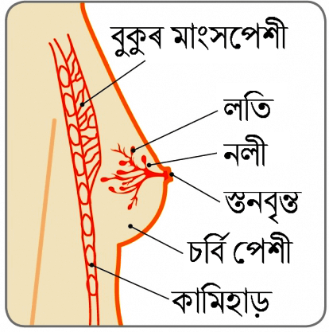
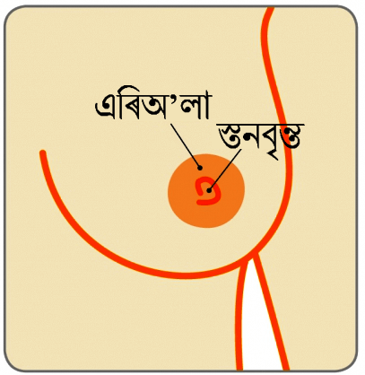

কৰ্কট ৰোগৰ দ্বাৰা অক্ষতিকাৰক স্তন স্বাস্থ্যৰ সমস্যাসমূহ
স্তনবৃন্ত সম্পৰ্কিত সমস্যাসমূহ
পায়ল (নাম সলনি কৰা হৈছে), এগৰাকী 45 বছৰীয়া মহিলাৰ যোৱা 6 মাহৰ পৰা বাওঁ স্তনৰ পৰা বাৰংবাৰ তৰল নির্গমন হ্য় আৰু স্তনবৃন্তৰ চাৰিওফালে সংক্রমণ হ্য়৷
স্তন/p>

স্তনবৃন্ত

ডাক্ট এক্টাচিয়া কি?
স্তন ল’বিউল (গাখীৰ উৎপাদনকাৰী গ্লেণ্ড) আৰু নলীৰে (যিবোৰ নলীৰে স্তনবৃন্তলৈ গাখীৰ পৰিবাহিত হ্য়) গঠিত, যিবোৰ চর্বিময় কোষকলা আৰু সমর্থিত কোষকলাৰে পৰিবেষ্টিত হৈ থাকে৷ যেতিয়া কোনো মহিলাই ৰজোনিবৃত্তি প্রাপ্ত কৰে তেতিয়া এই স্তনবৃন্তৰ পিছফালে থকা নলীবোৰ বয়সৰ কাৰণে ছুটি আৰু বহল হৈ যায়৷ ইয়াক ডাক্ট এক্টাচিয়া বুলি কোৱা হ্য়৷
ই এক স্বাভাৱিক পৰিৱর্তন আৰু চিন্তাৰ কোনো কাৰণ নাই৷ কেতিয়াক নির্গমন হোৱা তৰলখিনি বহল হৈ যোৱা নলীত জমা হৈ যায় আৰু তেতিয়া এইবোৰৰ লাইনিঙত জ্বলনি-পোৰনি হ’ব ধৰে৷ এই লাইনিত গাঁৰো হ’ব পাৰে আৰু এইবোৰ বেদনাদায়ক হ’ব পাৰে, যদিওবা এইবোৰ সচৰাচৰতে নহ্য়৷
ডাক্ট এক্টাচিয়া কেনেকৈ ধৰা পেলোৱা হ্য়?
বিশেষজ্ঞৰ পৰামর্শ অত্যাৱশকীয় হ্য় আৰু আৰু তিনিটা ভিন্ন পৰীক্ষা কৰোৱাতো গুৰুত্বপূর্ণ হৈ পৰে, ইয়াক প্ৰায়ে ট্রিপল এচেচমেন্ট বোলা হ্য়, যাতে ৰোগ নির্ণয় নিশ্চিত কৰা যায়৷ ইয়াৰ বাবে স্তনৰ নিদানিক পৰীক্ষা, মেম’গ্রাম (স্তনৰ এক্স-ৰে) আৰু আল্ট্রাচাউণ্ড স্কেন (যিয়ে উচ্চ ফ্রিকুভ্লেন্সিৰ শব্দ তৰংগৰ দ্বাৰা স্তনৰ প্রতিচ্ছবি তৈয়াৰ কৰে) কৰা হ্য়৷.
যদি স্তনবৃন্তৰ পৰা তৰল নির্গমন হ্য়, তেনেহলে এইবোৰো পৰীক্ষা কৰিব লাগিব, বিশেষকৈ যদিহে এইবোৰত তেজৰ আভাস পোৱা যায়, ইয়াৰ দ্বাৰা ৰোগ নির্ণয় নিশ্চিত কৰা হ্য়৷
ডাক্ট এক্টাচিয়াক কেনেদৰে ব্যৱস্থাপনা কৰা হ্য়?
প্রায়বোৰ ক্ষেত্রতে কোনো চিকিৎসাৰ প্রয়োজন নহ্য় যদিহে ই এক বার্ধক্য প্রক্রিয়াৰ অংশ হ্য় আৰু এই সমস্যা নিজে নিজে নোহোৱা হৈ যায়৷ কিন্তু যদি নতুন লক্ষণ পৰিলক্ষিত হ্য় তেনেহলে বিশেষজ্ঞৰ পৰামর্শ লোৱাতো গুৰুত্বপূর্ণ৷ কিন্তু, যদি স্তনবৃন্তৰ পৰা অসুবিধাজনক তৰল নির্গমন অব্যাহত থাকে তেনেহলে প্রভাৱিত নলীবোৰ আঁতৰোৱাৰ কাৰণে অস্ত্রোপচাৰৰ আৱশ্যক হ’ব পাৰে৷ সাধাৰণতে জেনেৰেল এনাস্থাচিয়াৰ অধিনত এই অস্ত্রোপচাৰ কৰা হ্য় আৰু ৰোগী চিকিৎসালয়ত এদিন বা এৰাতি থাকিব লগা হ’ব পাৰে৷
পেৰিডাক্টেল মাষ্টিটিচ কি?
পেৰিডাক্টেল মাষ্টিটিচ হৈছে এবিধ অক্ষতিকাৰক (অ-কর্কটৰোগ) স্তনৰ অৱস্থা৷ কেতিয়াবা স্তনবৃন্তৰ তলত থকা ডাক্টবোৰত প্রদাহ আৰু সংক্রামিত হ্য়৷ ইয়াকে পেৰিডাক্টেল মাষ্টিটিচ বুলি কোৱা হ্য়৷ যদিও সকলো বয়সৰ ব্যত্তি ইয়াৰ দ্বাৰা প্রভাৱিত হ’ব পাৰে, কিন্তু সাধাৰণতে কম বয়সীয়া মহিলাসকল ইয়াৰ দ্বাৰা অধিক প্রভাৱিত হোৱা দেখা যায়৷ সাধাৰণতে মহিলাসকল ইয়াৰ দ্বাৰা প্রভাৱিত হ্য়, কিন্তু বিৰল ভাবে পুৰুষৰো পেৰিডাক্টেল মাষ্টিটিচ হ’ব পাৰে৷.
পেৰিডাক্টেল মাষ্টিটিচ হ’লে স্তনযুগল স্পর্শ কৰিলে লেহুকা আৰু তপত অনুভৱ হ্য় আৰু ছাল ৰঙচুৱা পৰা দেখা যায়৷ স্তনবৃন্তৰ পৰা জুলীয়া পদার্থও নির্গত হ’ব পাৰে যিবোৰ তেজ থাকিবও পাৰে বা নাথাকিবও পাৰে৷
কেতিয়াবা স্তনবৃন্তৰ বা স্তনৰ কোষকলাৰ পিছফালে লদা থকা যেন অনুভৱ হ’ব পাৰে আৰু স্তনবৃন্তত ঘা লাগিব পাৰে৷ ইয়ে স্তনবৃন্তক ভিতৰৰ ফালে টানি নিব পাৰে, গতিকে ই ওলোটা হৈ যায়। কেতিয়াবা ফোঁহা (পুঁজ থকা) বা ভগন্দৰ (ডাক্ট আৰু ছালৰ মাজত বিস্তাৰিত হোৱা) বিকাশিত হ’ব পাৰে৷ ধূমপান কৰা ব্যত্তিসকলৰ পেৰিডাক্টেল মাষ্টিটিচ হোৱাৰ সম্ভাৱনা অধিক, কাৰণ চিগাৰেটৰ ধোৱাই স্তনবৃন্তৰ পিছফালে থকা ডাক্টবোৰ ক্ষতিগ্রস্ত কৰিব পাৰে৷ ধূমপানে নিৰাময় প্রক্রিয়াও মন্হৰ কৰি দিয়ে৷.
পেৰিডাক্টেল মাষ্টিটিচক কেনেকৈ ধৰা পেলাব পৰা যায়?
স্তনৰ নিদানিক আৰু আল্ট্রাচাউণ্ড পৰীক্ষা কৰাতো অত্যাৱশ্যকীয়৷ যিহেতু স্তনযুগল লেহুকা হৈ পৰে, গতিকে মেম’গ্রাম অসুবিধাজনক হ’ব পাৰে আৰু সংক্রমিত হৈ থকালৈকে কৰা নহ্য়৷ যদি স্তনবৃন্তৰ পৰা জুলীয়া পদার্থ নির্গত হ্য় তেনেহলে ইয়াৰ নমুনা পৰীক্ষাগাৰলৈ প্রেৰণ কৰা হ’ব যাতে অনুবীক্ষণ যন্ত্রৰ তলত চাই ৰোগ নির্ণয় নিশ্চিত কৰিব পৰা যায় (যদি নির্গত হোৱা জুলীয়া পদার্থত তেজ থাকে)৷
পেৰিডাক্টেল মাষ্টিটিচৰ চিকিৎসা কেনেদৰে কৰা হ্য়?
প্রায়ে এন্টিবায়টিকৰ দ্বাৰা সংক্রমণ সফল ভাবে চিকিৎসা কৰা হ্য়৷ বিষ নিৰাময় কৰিবলৈ পেৰাচিটামলৰ পৰামর্শ দিয়া হ্য়৷ যদি ফোঁহা (পুঁজ থকা) বিকাশিত হ্য়, তেতিয়া প্রথম বিকল্প ৰূপে আল্ট্রাচাউণ্ড নির্দেশিত ব্যৱস্থাৰে (এচপিৰেশ্বন) পুঁজবোৰ উলিয়াই দিয়া হ্য়৷ আৱশ্যক হ’লে আটাইবোৰ পুঁজ উলিয়াই দিবলৈ বাৰে বাৰে এই ব্যৱস্থা গ্রহণ কৰা হ্য়৷ যদি বাৰে বাৰে এচপিৰেশ্বন কৰিলেও সুফল পোৱা নাযায়, তেনেহলে কম সময়ৰ কাৰণে জেনেৰেল এনেস্থেচিয়া প্রয়োগ কৰি পুঁজবোৰ উলিয়াই দিয়া হ্য়৷
যদি পেৰিডাক্টেল মাষ্টিটিচ পুনৰাই হ্য় (ঘূৰি আহে), তেনেহলে অস্ত্রোপচাৰ কৰি প্রভাৱিত ডাক্টটো বা ডাক্টবোৰ আঁতৰাই দিয়া হ্য়৷ পেৰিডাক্টেল মাষ্টিটিচৰ বাৰংবাৰ পুনৰাবৃত্তি হোৱাটো ৰোধ কৰিবলৈ প্রভাৱিত ডাক্টটো বা ডাক্টবোৰ আতৰাই পেলোৱা (মাইক্রোডকেটমী বুলি কোৱা হ্য়) বা সকলো প্রধান ডাক্টবোৰৰ আঁতৰাই পেলোৱাৰ (টোটেল ডাক্ট এক্সচিচেন) অস্ত্রোপচাৰ কৰিব লগা হ’ব পাৰে৷ জেনেৰেল এনেস্থেচিয়াৰ অধিনত এই অস্ত্রোপচাৰ সম্পাদন কৰা হ্য়৷.